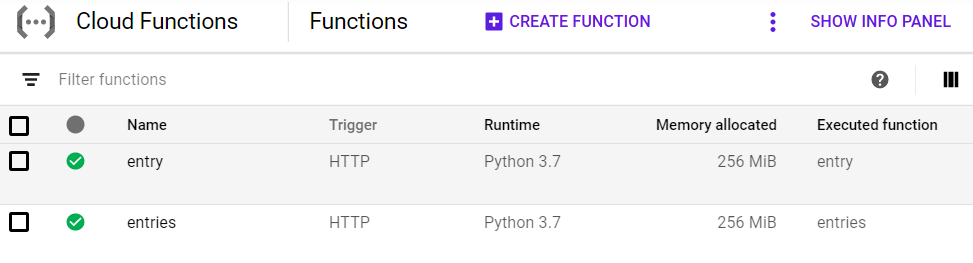
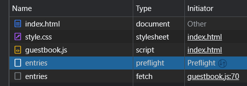
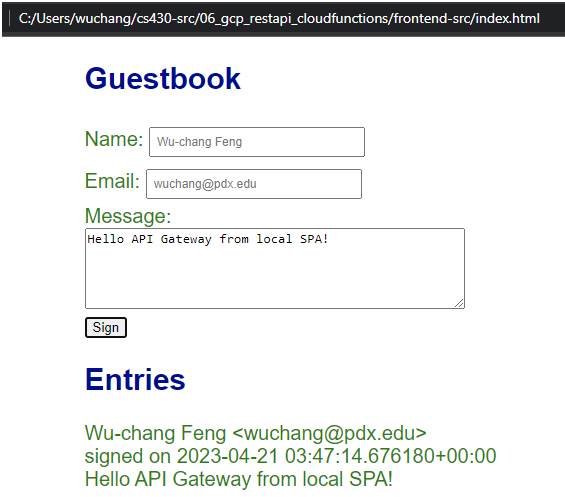
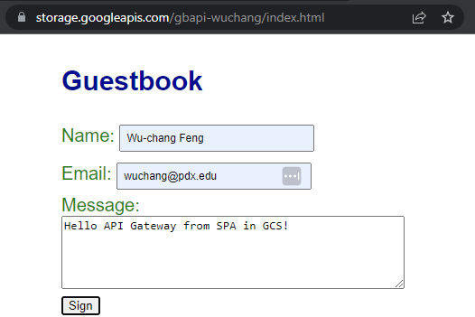
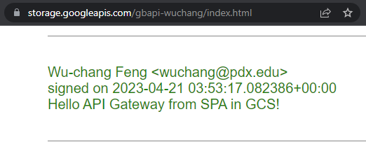

API Gateway is one of several platforms on Google Cloud for building and hosting REST APIs. It provides common API Gateway features such as request validation, API key management,and usage reporting along with support for integrations with a variety of forms of backend infrastructure for processing API requests.
Previously, rendering of the Guestbook was done in Flask with Jinja templates returning HTML and CSS back to the browser upon each update. Modern, client-side rendering approaches, however, perform the rendering task on the front-end browser, leaving only the Model function to be implemented by the backend server. When split into this architecture, after the browser downloads the initial web content, the backend is then only accessed via a REST API to update Model state. Serverless functions are often used to implement REST APIs. As our Guestbook application is quite minimal, having only two functions, it can easily be adapted to this style of architecture.
To demonstrate this, we will now take our guestbook application and break it into a frontend and a backend and then create an API for directly accessing the Guestbook model backend. Our backend REST API will be deployed on GCP's API Gateway with an integration with Cloud Functions to perform the backend operations themselves. Note that because our Guestbook is a public API, so we will be skipping the use of API keys and allowing arbitrary cross-site requests for it.
To begin with, visit the code in Cloud Shell
cd cs430-src/06_gcp_restapi_cloudfunctions
The gbmodel code is the same.
gbmodel/model_datastore.py
# Update YOUR_PROJECT_ID
class model(Model):
def __init__(self):
self.client = datastore.Client('YOUR_PROJECT_ID')The main code change in this version is the removal of the server-side rendering code that generates HTML for the site. This has been replaced with a single file (main.py) that Cloud Function looks for to implement our two endpoints. The first endpoint is named entries and supports code for handling GET requests as shown below. It calls our Model's select() function to retrieve all of the entries in the Guestbook model. In previous instantiations, the web application took the results returned from the model (as a list of lists) and then rendered them in HTML using Jinja2. For the REST API, rather than return HTML, we instead need to return an object in Javascript Object Notation (JSON). The code takes the list of lists and creates a list of dictionaries (entries) that is then converted into JSON (json.dumps) and sent back to the client (make_response) with an appropriate response type (application/json).
main.py
from flask import make_response, abort
import gbmodel
import json
def entries(request):
""" Guestbook API endpoint
:param request: flask.Request object
:return: flask.Response object (in JSON), HTTP status code
"""
model = gbmodel.get_model()
if request.method == 'GET':
entries = [dict(name=row[0], email=row[1], date=str(row[2]), message=row[3] )
for row in model.select()]
response = make_response(json.dumps(entries))
response.headers['Content-Type'] = 'application/json'
return response, 200CORS aside
The entries function also contains code to handle HTTP OPTIONS request methods.
main.py
if request.method == 'OPTIONS':
return handle_cors('GET'), 200This is to support CORS (cross-origin resource sharing). CORS allows us (as a REST API provider) to restrict which web sites can access our APIs from Javascript. If your Guestbook front-end is hosted by foo.com, the web browser will query our REST API endpoint with a "pre-flight" OPTIONS request to check to see if Javascript code from foo.com is able to access the endpoint. The code for handling the CORS request is below. As the code shows, it simply sets the HTTP response headers to allow all origins '*' to perform the specified method request (in this case, GET). We use the wildcard since we don't know (in this codelab) where the frontend will be served from. If the front-end were served from foo.com, then we could specify 'https://foo.com' for the 'Access-Control-Allow-Origin' header value.
main.py
def handle_cors(method):
response = make_response()
response.headers['Access-Control-Allow-Origin'] = '*'
response.headers['Access-Control-Allow-Methods'] = method
response.headers['Access-Control-Allow-Headers'] = 'Content-Type'
response.headers['Access-Control-Max-Age'] = '3600'
return responseThe other endpoint implemented within main.py is named entry. As shown below, the endpoint only supports HTTP POST requests and checks to ensure that a JSON object specifying a Guestbook entry is included in the POST. It then gets the dictionary representation of the JSON object (request.get_json()), validating that all parts of the entry are included (via the all()), before calling the Model's insert()method to insert the entry into the Guestbook. As with the entries endpoint, it then returns the entire Guestbook back to the client so the UI can be updated with the new content.
main.py
def entry(request):
""" Guestbook API endpoint
:param request: flask.Request object
:return: flack.Response object (in JSON), HTTP status code
"""
model = gbmodel.get_model()
if request.method == 'POST' and request.headers['content-type'] == 'application/json':
request_json = request.get_json(silent=True)
if all(key in request_json for key in ('name', 'email', 'message')):
model.insert(request_json['name'], request_json['email'], request_json['message'])
else:
raise ValueError("JSON missing name, email, or message property")Note that, similar to the prior CORS support in the entries endpoint, we include similar code to handle the HTTP OPTIONS requests on this one.
We will now deploy our Cloud Functions. Go back to Cloud Shell and the source directory containing main.py. The command below deploys the function that has been implemented specifying a Python 3.7 environment. We'll be invoking these Cloud Functions via HTTP requests so specify an HTTP trigger for them. In addition, our two functions only require access to Cloud Datastore so we will deploy both using the service account created previously in order to practice least-privileges.
gcloud functions deploy entries \
--runtime python37 \
--trigger-http \
--service-account guestbook@${GOOGLE_CLOUD_PROJECT}.iam.gserviceaccount.com
gcloud functions deploy entry \
--runtime python37 \
--trigger-http \
--service-account guestbook@${GOOGLE_CLOUD_PROJECT}.iam.gserviceaccount.com
As we only want invocations of our Cloud Functions to come from API Gateway, disallow unauthenticated access to these functions when prompted. Then, wait for each function to finish deploying. Go to the Cloud Functions console to view the functions.

Then, use the commands below to show the functions' settings along with the URL to access each one (httpsTrigger).
gcloud functions describe entries gcloud functions describe entry
In Cloud Shell, use curl to access the entries HTTP end-point trigger.
curl https://...cloudfunctions.net/entries
The command should yield an error since the function disallows unauthenticated access.
We can send an authenticated request by attaching an identity token for ourselves from Google Shell. To do so, fill in the URL and attach an identity token for the Cloud Shell user (e.g. the project owner by invoking gcloud auth print-identity-token and sending it along with the authentication header for the request).
curl https://...cloudfunctions.net/entries -H "Authorization: Bearer $(gcloud auth print-identity-token)"
The request will result in the entire contents of the Guestbook being returned to you as a JSON object by the function. Ensure that this is the case before continuing.
API Gateways are used to manage collections of APIs that an organization might provide. We will now deploy a gateway which will integrate with our backend Cloud Functions to implement the Guestbook API.
To begin with, enable the required services:
gcloud services enable apigateway.googleapis.com
gcloud services enable servicemanagement.googleapis.com
gcloud services enable servicecontrol.googleapis.comThen create the API.
gcloud api-gateway apis create gbapi --project=$GOOGLE_CLOUD_PROJECTOpenAPI specifications are a standard way of specifying what each API accepts as parameters and what each delivers as a response. One can think of this as a typing system to ensure the client and server are sending data as expected to each other. A template specification for the Guestbook API is included in the repository. It contains everything required for specifying the API except for the URL for the backend integrations to Cloud Functions. Specifically, the snippet below is for the /entries end-point. It specifies the methods supported by each API path and the expected responses. In this case, there is a GET method for obtaining the entries and an OPTIONS method for handling any CORS preflight requests. For the /entries path, we must fill in the backend URL that will service API requests to the path.
Edit the file and fill in the HTTP trigger for the Cloud Function entries in the backend URL for both methods.
openapi.yaml
swagger: '2.0'
info:
title: Guestbook API
description: Guestbook API on API Gateway with a Google Cloud Functions backend
version: 1.0.0
schemes:
- https
produces:
- application/json
paths:
/entries:
get:
summary: Grab all entries
operationId: entries
x-google-backend:
address: https://.../entries
responses:
'200':
description: A successful response
schema:
type: string
options:
operationId: corsentries
x-google-backend:
address: https://.../entries
responses:
'200':
description: Allow CORSThe rest of the OpenAPI specification is shown below for the specification of the /entry endpoint. It includes the format of the expected JSON object for submitting a Guestbook entry and the handling of the OPTIONS method for supporting the CORS preflight request. We only need to provide the backend URL for handling the API requests. Go back to the Cloud Function entry and get its HTTP trigger.
Edit the file again and fill in the HTTP trigger for the Cloud Function entry in the backend URL for both methods.
openapi.yaml
/entry:
post:
summary: Add an entry
operationId: entry
x-google-backend:
address: https://.../entry
consumes:
- application/json
parameters:
- in: body
name: entry
description: Add entry to guestbook
schema:
type: object
properties:
name:
type: string
email:
type: string
message:
type: string
responses:
'200':
description: A successful response
schema:
type: string
options:
operationId: corsentry
x-google-backend:
address: https://.../entry
responses:
'200':
description: Allow CORSAs with any cloud resource, a service account with a set of permissions needs to be associated with any API we create. We have defined a Cloud Function that only allows authenticated access to it and our access to the Cloud Function via curl in Cloud Shell was only possible by attaching the identity token of the project owner.
In this step, we will set up the permissions to allow API Gateway to authenticate its requests to the Cloud Function backend. First, create a service account.
gcloud iam service-accounts create gbapisaThen, attach the permissions to allow the service account to invoke Cloud Functions.
gcloud projects add-iam-policy-binding ${GOOGLE_CLOUD_PROJECT} \
--member serviceAccount:gbapisa@${GOOGLE_CLOUD_PROJECT}.iam.gserviceaccount.com \
--role roles/cloudfunctions.invokerWith our OpenAPI specification and our properly configured service account, we can create an API Gateway configuration for our API using the OpenAPI specification and attaching the service account we wish to use to access the backend Cloud Function.
gcloud api-gateway api-configs create gbapiconfig \
--api=gbapi --openapi-spec=openapi.yaml \
--project=${GOOGLE_CLOUD_PROJECT} --backend-auth-service-account=gbapisa@${GOOGLE_CLOUD_PROJECT}.iam.gserviceaccount.comFrom this configuration, we can then instantiate the gateway itself, specifying the API we created previously and the configuration.
gcloud api-gateway gateways create gbapigw \
--api=gbapi --api-config=gbapiconfig \
--location=us-central1 --project=${GOOGLE_CLOUD_PROJECT}When the gateway finishes deploying, find the DNS name of it. One can also list the hostname via the command below.
gcloud api-gateway gateways describe gbapigw --location=us-central1- Include the hostname for the API gateway in your lab notebook.
We will be using this hostname to access our API endpoints from web clients by appending the paths of /entries and /entry as defined in the OpenAPI specification.
REST APIs can be programmatically accessed via any popular language. As we have been using Python for the class, we can do so using its interpreter. On your Ubuntu VM or in Cloud Shell, activate a virtual environment with Python requests installed and then launch the Python interpreter:
python3
Within the interpreter, import the requests package and access the REST API's entries endpoint, saving the response.
import requests
resp = requests.get('https://.../entries')Using the interpreter and the resp object, use Python's print() function to show the following for the response:
- Response HTTP status_code (
resp.status_code) - Response headers (
resp.headers) - Response text (
resp.text) - Response represented as a JSON object (
resp.json()) - Data type of the response JSON
Then, assign the response JSON to a variable and use the Python interpreter to write a loop that individually prints the name, email, date, and message of the first Guestbook entry returned.
- Take a screenshot of the loop and its output
Refer back to this sequence as needed when integrating a REST API into applications you write.
We can also use Python to submit a new Guestbook entry via the REST API. Within the same interpreter session, import the JSON package and create a dictionary containing a Guestbook entry with your name, email, and message of "Hello Cloud Functions from Python Requests!". Note that, in Python, you can create a dictionary using syntax similar to JSON. For example, the snippet my_dict = {'foo':'bar'} creates a dictionary with a single entry with key 'foo' and value 'bar'.
import json
mydict = {
'name' : 'Wu-chang',
'email' : 'wuchang@pdx.edu',
...
}Then, submit a POST request to the API's entry endpoint, passing the dictionary containing the Guestbook entry into the json keyword parameter to the post() method. The request package will convert the dictionary into the JSON format as part of the request.
resp = requests.post('https://.../entry', json=mydict)Print the response status, the response headers, and the response text that indicates a successful insertion within the Python interpreter as before.
- Take a screenshot of the output for your lab notebook
With a single page application (SPA), you download the entire site as a static bundle and then, just like an application, interact with it seamlessly. As the application needs to send and retrieve data to the backend server, it does so asynchronously using Javascript and HTTP requests to and from the APIs it is programmed to access. There are many examples of single-page applications such as Google Mail and Google Docs.
This version of the Guestbook is implemented in a similar manner. Since we designed both the AWS and GCP versions to supply an identical REST API interface, the code for our local client-side version is the same for both. This recalls the exact approach we took for our Model abstract class in previous implementations. With a standard interface to interface with the backend model, our controller and presenter code is able to work with any new models without modification. In this case, one can consider the REST API specification as our new model interface as it standardizes our HTTP queries so that our front-end code does not have to change if we shift backends between AWS and GCP.
On your Ubuntu VM, visit the source directory containing the application.
cd cs430-src/06_gcp_restapi_cloudfunctions/frontend-src
View index.html which contains the application. As the file shows, it is similar to prior versions with two exceptions. The first exception is that it now includes a Javascript file
frontend-src/index.html
<script src="./static/guestbook.js"></script>This file will execute code when we submit a new entry and update our page with the response. By operating on the DOM directly, it will allow us to view the results of our submission immediately without reloading the page.
The base page also implements the form used to sign the Guestbook. As the code below shows, each input field is labeled (name, email, message) so that it can be accessed by our Javascript code . In addition, when the "Sign" button is clicked, the sign() function that is defined in guestbook.js will be called.
frontend-src/index.html
<h2>Guestbook</h2>
<div>
<div>
<label for="name">Name: </label>
<input id='name' type='text' name='name'>
</div>
<div>
<label for="email">Email: </label>
<input id='email' type='text' name='email'>
</div>
<div>
<label for="message">Message: </label><br>
<textarea id="message" rows=5 cols=50 name="message"></textarea>
</div>
<button onclick="sign()">Sign</button>
</div>Finally, at the bottom of the page is the definition of a element named "entries". This element will be used by our Javascript code to automatically update what is rendered for the based on the entries returned by the backend.
frontend-src/index.html
<h2>Entries</h2>
<div id="entries"></div>The main file which implements our application is located at static/guestbook.js. In the file, we define a baseApiUrl for the REST API. This URL will support two endpoints: the entries endpoint supporting a GET request to obtain all of the entries in the Guestbook in JSON and the entry endpoint supporting a POST request to add an entry to the Guestbook using JSON. Begin by changing this URL to point to the base URL returned by the API Gateway deployment (e.g. https://...gateway.dev/ ). Include the ending '/'.
frontend-src/static/guestbook.js
const baseApiUrl = "<FMI>";There are three main functions in this file: getEntries, sign, and viewEntries. The code for getEntries is shown below. It simply uses the browser's fetch() interface to access the entries endpoint asynchronously. It then parses the returned string into the gbentries array, before calling viewEntries. viewEntries will then update the page's DOM elements directly with the data obtained.
frontend-src/static/guestbook.js
const getEntries = async () => {
const response = await fetch(baseApiUrl + "entries", {
headers: {
Accept: "application/json",
"Content-Type": "application/json"
},
method: "GET"
});
const gbentries = await response.json();
viewEntries(gbentries);
};The sign function collects form values via their label names and formats a JSON object with them. It then issues a POST request using the browser's fetch() interface to the entry endpoint asynchronously. The response to the request contains all of the entries in the Guestbook. As with the prior getEntries, once the JSON response is parsed, viewEntries is called to update the application.
frontend-src/static/guestbook.js
const sign = async () => {
const name = document.getElementById("name").value;
const email = document.getElementById("email").value;
const message = document.getElementById("message").value;
const response = await fetch(baseApiUrl + "entry", {
headers: {
Accept: "application/json",
"Content-Type": "application/json"
},
method: "POST",
body: JSON.stringify({ name: name, email: email, message: message })
});
const gbentries = await response.json();
viewEntries(gbentries);
};Both getEntries and sign, call viewEntries to update the UI with the gbentries returned by the API calls. As the code below shows, the viewEntries first clears out the DOM of previous guestbook entries. It then performs a map of a function across all of the gbentries it has been passed. The function mapped, appends the DOM elements that construct a single entry in the guestbook to the node.
frontend-src/static/guestbook.js
const viewEntries = entries => {
const entriesNode = document.getElementById("entries");
while (entriesNode.firstChild) {
entriesNode.firstChild.remove();
}
entries.map(entry => {
const nameAndEmail = document.createTextNode(
entry.name + " <" + entry.email + ">"
);
const signedOn = document.createTextNode("signed on " + entry.date);
const message = document.createTextNode(entry.message);
const br = document.createElement("br");
const br2 = document.createElement("br");
const p = document.createElement("p");
p.classList.add("entry");
p.appendChild(nameAndEmail);
p.appendChild(br);
p.appendChild(signedOn);
p.appendChild(br2);
p.appendChild(message);
entriesNode.appendChild(p);
});
};Ensure that you have modified the static/guestbook.js file with the base URL of your endpoints. Bring up a web browser window with the Developer Tools open.
Then go to File=>Open File to open a local HTML file. Navigate to the directory containing the index.html file and view it. Click on the "Network" tab in Developer Tools.
- Take a screenshot showing the preflight request to the API that allows API access, as well as the subsequent fetch request have been successful.

Then, enter a message using your name, PSU e-mail address, and the message "Hello API Gateway from local SPA!".
- Take a screenshot of the Guestbook including the URL.

Storage buckets are often used to serve static web sites. When configured as multi-region buckets, the content within them can be automatically forward deployed to locations near to where clients are requesting the content from. Distributing our client application can be done via Cloud Shell. To begin with, bring up Cloud Shell and change directories to the frontend client source code.
cd cs430-src/06_gcp_restapi_cloudfunctions/frontend-src
Begin by changing the baseApiUrl to point to the API Gateway endpoint (e.g. https://...gateway.dev/ )
frontend-src/static/guestbook.js
const baseApiUrl = "<FMI>";Then, create a bucket with your name formatted as below:
gsutil mb gs://gbapi-<OdinId>
(e.g. gs://gbapi-wuchang)
Since this will be a publicly accessible web site, we will assign an access policy allowing all users to access its content via IAM. In this case, the special identifier allUsers specifies everyone and objectViewer assigns read-access permissions.
gsutil iam ch allUsers:objectViewer gs://gbapi-<OdinId>
Finally, copy the entire contents of the directory over to the bucket.
gsutil cp -r . gs://gbapi-<OdinId>
Storage buckets by default are web accessible via the following URL
https://storage.googleapis.com/<BucketName>
Bring up a web browser with Developer Tools up and visit the index.html file in this bucket:
https://storage.googleapis.com/<BucketName>/index.html
As with the prior version, both a preflight request and a fetch request to the API endpoint are successful, allowing the application to load.
Enter a message using your name, PSU e-mail address, and the message "Hello API Gateway from SPA in GCS!". Scroll down to find the message posted.
- Take a screenshot of the Guestbook including the URL.


Congratulations. You have deployed a serverless API supporting a single-page application.
To clean up, delete the storage bucket, the API Gateway, and the Cloud Functions either via the web console UI or from Cloud Shell via the CLI.
gsutil rm -r gs://gbapi-<OdinId>
gcloud api-gateway gateways delete gbapigw --location us-central1
gcloud api-gateway api-configs delete gbapiconfig --api gbapi
gcloud api-gateway apis delete gbapi
gcloud iam service-accounts delete gbapisa@${GOOGLE_CLOUD_PROJECT}.iam.gserviceaccount.com
gcloud functions delete entries
gcloud functions delete entry